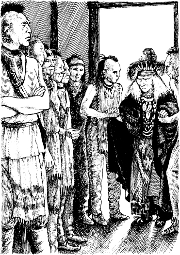

馬瓜來到特拉華的村子。特拉華是法國的朋友。不過他們沒參戰。
馬瓜來到特拉華的議事廳。特拉華的酋長正在講話。
「休倫酋長，歡迎你，」一個特拉華說。
「我的女人俘虜安全嗎？」瑪瓜問。
「她很好，」特拉華說。
然後馬瓜說，「森林裡有沒有陌生人？白人？」
「村子裡有陌生人，」特拉華說。「他們在我的屋子裡。不過陌生人在這個村子總是受歡迎的。」
「法國國王會怎麼看這件事？」馬瓜說。「他的最大敵人在特拉華的村子裡。這個敵人是白人。他殺了很多法國人的朋友。」
「哪個白人是法國的敵人？」特拉華酋長問。
「就是那個偵察兵，鷹眼！就是那個長槍！其他陌生人都是他的朋友。他們也是法國的敵人。」
特拉華們開始靜靜地講話。其中一個很快就離開議事廳。幾分鐘後，他又回來了。
然後一個非常老的人走進議事廳。兩個年輕特拉華幫助那個老人。他留著很長的白色頭髮，臉上有許多皺紋。酋長們喊出他的名字──「達門恩德」。

馬瓜知道這個著名的特拉華酋長的名字。達門恩德已經一百多歲了！
達門恩德坐下了。然後他對兩個年輕特拉華說。他們站起來走開了。
很快，他們帶回來愛麗絲、科拉、鄧肯和鷹眼。
科拉非常生氣。她對酋長們說話。
「昨天，我們在這個村子裡還受歡迎，」她說。「特拉華是我們的朋友。今天我們成為你們的俘虜了。為什麼我們會成為俘虜？」
達門恩德沒回答。
「鷹眼是誰？」他問。
鷹眼向前走。「我就是鷹眼，」他說。
然後達門恩德對馬瓜快速說。
「帶走你的俘虜──黑頭髮的女人。走！」他說。
不過科拉對老酋長說。
「還有另外一個人跟我們一起來到這個村子，」她說。「現在他也成為俘虜了。不過他是你們自己人。他会告訴我們这个故事。求求你！聽聽他的故事！」
達門恩德看看酋長們。「這個其他俘虜是誰？」他問。
「他為英國人作戰，」馬瓜很快說。「你們必須殺了他。」
「把他帶來！」達門恩德說。
兩個男的離開議事廳。很快他們帶著昂卡斯回來了。
他站在達門恩德面前。老酋長看著他。達門恩德看到昂卡斯胸前有個刺青。那是一隻烏龜。
達門恩德看看昂卡斯。然後他對年輕的摩希干人微笑。「你的父親是一位偉大的酋長，」他說。
昂卡斯突然看到鷹眼。「特拉華的父親，」他对達門恩德說。「這是我的朋友，鷹眼。他是特拉華的朋友。」
「長槍？」達門恩德說。「他不是特拉華的朋友。他殺害我們的年輕人。」
然後鷹眼說。「我殺休倫人，」他說。「我從來沒殺過特拉華。」
特拉華相信鷹眼的話。
達門恩德看看昂卡斯。「為什麼你是休倫人的俘虜？」他問。
「我幫助英國女人，」昂卡斯說。
達門恩德看看科拉。然後他對馬瓜說。
「為什麼英國女人是你的俘虜？」他問。
「我討厭英國人！」馬瓜說。「現在一個英國酋長的女儿是我的俘虜。現在芒羅的女兒會成為我的妻子。」
馬瓜走到科拉面前，抓住了她的手臂。
「等一下！」鄧肯喊。「不要帶走她。英國人會給你錢。」
不過馬瓜沒聽。他把科拉往門口拖。「過來！」他對她說。
「我是你的俘虜，」科拉對馬瓜說。「不過別碰我。」
她轉向鄧肯。「請照顧好我妹妹，」她说。她親了親愛麗絲。
「我也會跟去！」鄧肯喊。「我會幫助你的，科拉！」
「等一下！」鷹眼說。他抓住鄧肯的手臂。鷹眼很快又安靜地說。
「馬瓜的朋友在森林裡等着，」他說。「他們會殺了你。」
「休倫！」昂卡斯說。「我們會找到你的！我們會殺了你！」
不過馬瓜笑了。「摩希干人，」馬瓜說，「你殺不了我。我太強了。留在這裏，跟你的兄弟特拉華待在一起。他們很弱。他們喜歡他們的家和食物。他們不喜歡打架。他們不會幫助你的。」
然後馬瓜走出議事廳。科拉跟在他後面。
昂卡斯對達門恩德說。「特拉華的父親，」他說。「幫助我們。我們必須跟著英國女人。」
達門恩德召集村子裡年輕的人。「跟摩希干人走，」他說。「休倫人現在是我們的敵人！」